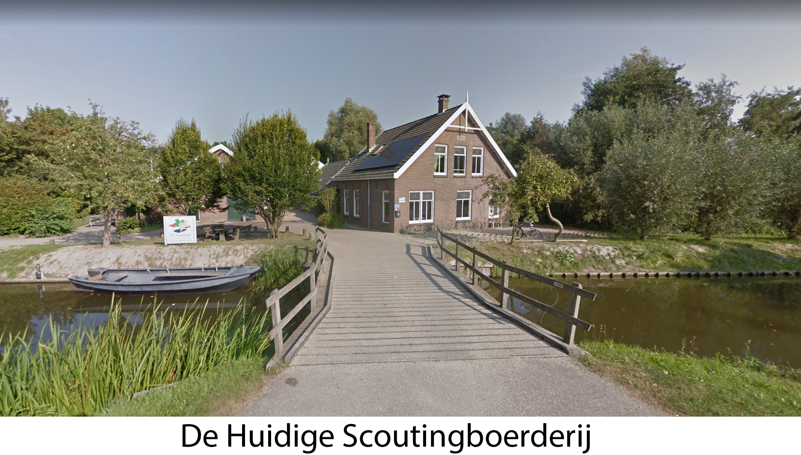

Welkom op de homepage van Scouting Woerden
Over de Albert Schweitzergroep
Ontstaan van de naam

Het toenmalige bestuur heeft een levendige discussie gehouden over de naamgeving o.a. Herman van de Woerdengroep (de moordenaar van Floris de Vijfde) of Willem de Zwijgergroep (daar waren er al zoveel van) etc.
Er is gekozen voor de naam "Albert Schweitzergroep".
In de jaren 60 was Albert Schweitzer (zendingsarts in Afrika) een algemeen gewaardeerde persoon. Wat hem bijzonder maakte dat hij zeer geboeid was voor alles wat leefde. Van hem is de uitspraak: "Eerbied voor al wat leeft".
Oprichting en locatie
De Albert Schweitzergroep is in 1966 opgericht in Woerden. Na jaren van verhuizen zijn we al geruime tijd neergestreken aan de Kromwijkerdijk alwaar we gegroeid zijn tot onze huidige omvang. De complete vereniging bestaat uit ongeveer 545 (Mei 2017) personen en is daarmee een van de grotere in Nederland.
Gelegen op een groenstrook, ingeklemd tussen een Boerenlandweg en een kantorenpark, hebben we hier, aan de rand van Woerden, de ruimte die we wensen.
Wat willen wij?
Wij zijn een vereniging, die jeugd en jongeren plezier en ontwikkeling biedt met een uniek en eigentijds scoutingprogramma. Als vrijwilliger voel je je daar waardevol. Je levert kwaliteit om die ontwikkeling van jeugd en jongeren te stimuleren. Dat doe je met plezier en vriendschap.
Samengevat. De Albert Schweitzergroep wil zich actief inzetten voor de groei van kinderen én onze leiding in een veilige omgeving. De groep wil het accent leggen op de ontwikkeling van vaardigheden om in teamverband leuke / leerzame activiteiten te verrichten of voor te bereiden.
Bestuur
De groep heeft een groepsbestuur bestaande uit een voorzitter, secretaris, penningmeester, groepsbegeleider en bestuurslid Beheer & Onderhoud.
Het groepsbestuur zorgt ervoor dat het scoutingspel gespeeld kan worden. Het groepsbestuur bereidt de vergadering van de groepsraad voor, geeft uitvoering aan en controleert op de uitvoering van de door de groepsraad genomen besluiten. Ook vertegenwoordigt het groepsbestuur de groep naar buiten.
Het Groepsbestuur draagt zorg over de materiële zaken binnen onze groep. Begroting en jaarverslag worden opgemaakt en ter goedkeuring voorgelegd aan de Groepsraad.
Onder verantwoording van het Groepsbestuur vallen ook zaken als verhuur, onderhoud, veiligheid en arbo etc.
Verzekeringen
Gelukkig heeft onze scoutinggroep nog nooit ernstige ongelukken meegemaakt, maar …..ze zitten wel in een klein hoekje!
Als iemand door eigen schuld of opzet schade veroorzaakt aan een ander, moet hij of zij in principe zelf voor de kosten opdraaien. De benadeelde kan in dit geval de veroorzaker aansprakelijk stellen.
Er zijn natuurlijk situaties te bedenken waar een ander niet aansprakelijk voor is, bijvoorbeeld letsel dat tijdens een potje voetballen ontstaat. De benadeelde kan dan wel een claim indienen bij de ongevallenverzekering van de groep.
Via Scouting Nederland is uw zoon/ dochter collectief verzekerd tegen ongevallen en wettelijke aansprakelijkheid tijdens alle activiteiten van de groep en haar leden.
De verzekering voorziet in een uitkering ingeval van overlijden, blijvende invaliditeit of geneeskundige kosten ten gevolge van een ongeval, alsmede schade ten gevolge van beschadiging, vernietiging of verlies van zaken, inclusief vervolgschade.
Let op: dit is een aanvullende verzekering, die pas in werking treedt als de schade elders niet verhaalbaar blijkt te zijn (het zogenaamde secundaire karakter)! Niet leden, bijvoorbeeld belangstellenden op een open dag, vallen niet onder deze verzekering. Wel weer onder de verzekering vallen bijvoorbeeld kookstafleden en alle anderen die door de scoutinggroep gevraagd zijn voor bepaalde scoutingactiviteiten. De collectieve aansprakelijkheid-verzekering dekt niet:
* Schade aan eigendommen van de scoutinggroep
* Schade veroorzaakt door of met een motorrijtuig
* Schade die door de verzekerde met opzet is veroorzaakt
* Aansprakelijkheid van leden en vrijwilligers, tenzij er geen andere dekking bestaat.
De geneeskundige kosten en de aansprakelijkheidskosten volgens de W.A.-verzekering worden alléén vergoed indien geen aanspraak op vergoeding krachtens enige andere verzekering of voorziening kan worden gemaakt !! (Het zgn. secundair karakter)
De voorwaarden en dekkingsgebied van deze verzekering zijn in te zien bij de penningmeester. Als bestuur gaan wij er vanuit dat een ieder die rijdt voor de scoutinggroep een inzittendenverzekering heeft afgesloten! Kijkt u voor de zekerheid uw polis er even op na. Als groep hebben we geen aanvullende autoverzekering afgesloten, daar de kosten zeer hoog zijn, terwijl halen en brengen, alsmede aanhangwagenvervoer niet gedekt zijn.
Bestuurders van de Albert Schweitzergroep zijn niet persoonlijk aansprakelijk, behalve door het plegen van een onrechtmatige daad, wanprestatie en/of misleiding. Het bestuur is als collectief wel aansprakelijk als door onbehoorlijk besturen schade is ontstaan.